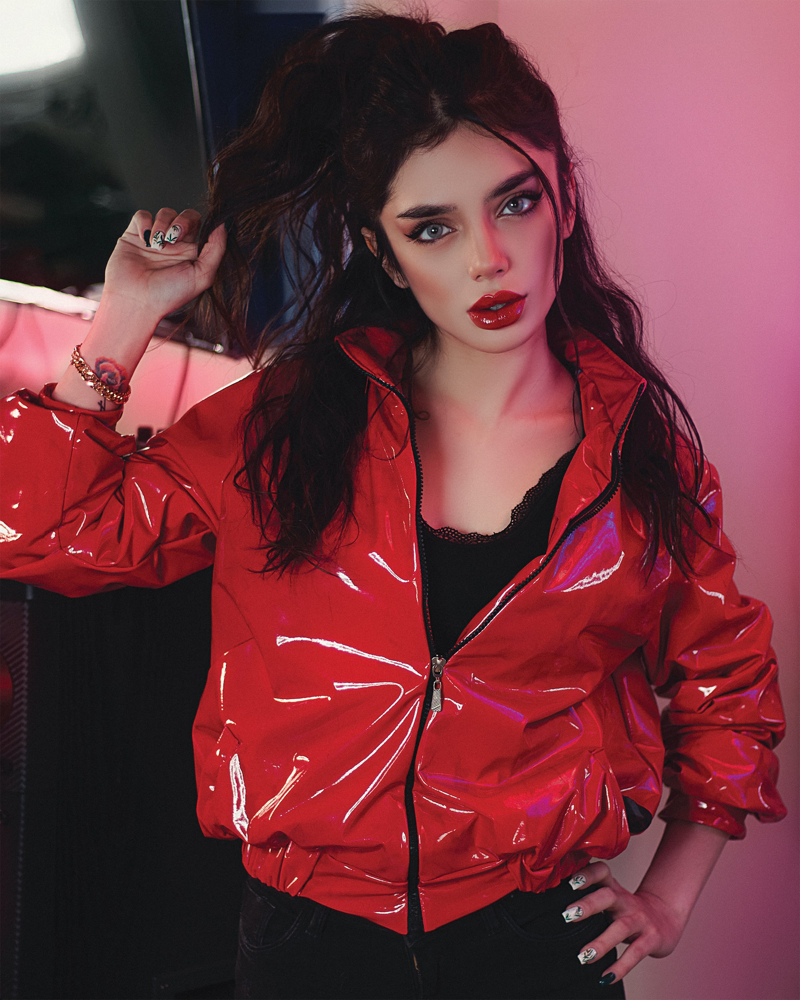

이번 시즌 패션 피플은 스트리트 룩을 부르주아적으로 재해석한 에디 슬리먼의 재기 발랄한 쇼에 열광했다. 테니스 코트를 배경으로 우아한 스포티 룩의 향연을 펼친 데이비드 코마 역시 오랜만에 호평받았다. 미우미우는 또 어떤가! 가상의 스포츠 아레나를 만들어 스포츠웨어와 하이패션을 영민하게 조합한 룩을 선보인 미우치아 프라다의 아이디어 역시 감탄을 자아냈다. 포인트는 올봄 디자이너들이 선보인 스포티 룩이 하나같이 구매욕을 불끈 샘솟게 할 만큼 예쁘다는 사실!